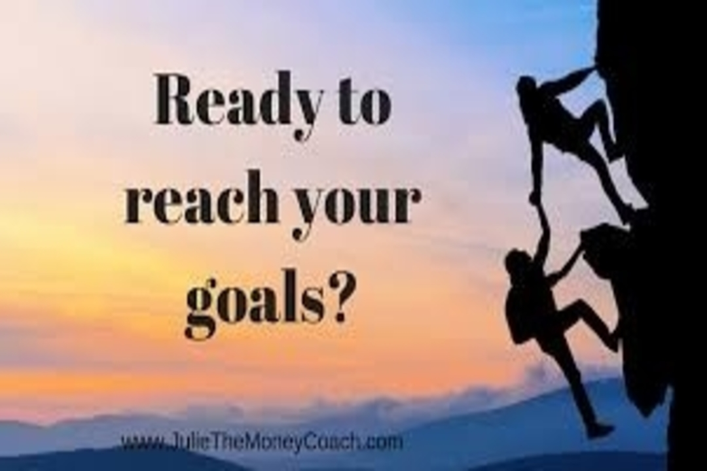

3 habits you can pursue to make your life 10x times enriching & fulfilling

There are a lot of tips and techniques floating around these days that one needs to put into practice under such uncertain situations to isolate oneself from such difficult times. They are very much apt as we need to rightly prepare ourselves given the situation we are into. After going through almost all of them, I have penned down the below 3 key things that I believe are the most important and simpler ones to start with, as they are something that can be carried out at an individual level within oneself without much dependency onto others.
Be open and Up-skill yourself: This world keeps changing and so it becomes imperative for all the species living inside this globe to keep evolving themselves for survival. It is a need for everyone to upgrade yourself in all the possible areas at any given point in time and this need has become even dire under such trying circumstances. Coming to the corporate world, it is not possible to stay with a same set of skills for very long. You either need to upgrade your skill-set and learn new related skills or altogether a different skill-set in some circumstances, to keep yourself relevant in the job market. Technologies keep changing which brings a new nature of jobs into the market which one needs to take cognizance of. One is expected to have a dynamic and agile mindset and should adopt newer ways of doing things. You should be more fluid in your thinking and actions, while you still stay on course to achieving your goals and fulfilling your dreams. With an open mindset, you need to identify the skills that are required for your career and start practicing it. Constant practice in developing a particular skill can give you great results over a period of time. And you wouldn’t even realize when people would start gravitating towards you for that skill. So keep up-skilling & upgrading yourself with a constant practice.
Creating Opportunities: While it is important to upgrade yourself in terms of your required skill-sets, you should also be spending time in presenting yourself an opportunity where you can showcase your skills and deliver great results. You cannot expect the opportunities to fall on your lap and then you perform, you need to know how to create one for you to put your best foot forward. You need to create opportunities to showcase your skills for the people to know and understand you for having to pick you up from the potential candidates. To start with, you may use the social media at its fullest, in order to put across your profile and skills so that the relevant people can reach out to you to fulfill their requirements. You may try venturing into other ways to make your skills useful to the people in need. We are moving towards gig economy and so it is imperative for you to create multiple sources of earning which would help you put your skills to its fullest potential. There are a lot of remote jobs available that can be done from your place without having you to travel anywhere. You can showcase your work and share your achievements with people around you which would help you create a good network as well to stumble upon with more opportunities. Creating multiple work opportunities would not only make you financially secure but also present various options to fall back on in case of crisis like this.
Service to people: This is the most important thing one needs to practice throughout. You would always want to use every bit of yours in service of others. While you keep thinking about yourself for most of the times, it is imperative that you contribute genuinely in every way you can to anyone around you who is in need. A sincere service to the society makes you fulfilled a lot more than anything you could possibly do. The most enriching experience an individual can ever have is by contributing to the society and people in need. There are various ways with which you can help others in these trying circumstances. Majorly it could be financially to the ones who are in a dire need on account of their personal economic loss. You might also want to help in an emotional way to those who have suffered job losses by raising their spirits high and an assurance about things getting fine with time. Genuinely helping others without expecting anything in return would make you feel doing something larger than yourselves. You would also be benefiting by making good comrades along the way who would also stand beside you in times of need.
While they are really good to read, it is 10x times more effective when you apply in your daily lives. Unless they are brought into practice on a consistent basis, they will not help you in generating results. Preferably, they should become a part of your daily habits. Applying them consciously in your life on a regular basis will not only help you navigate through such situations but also proactively prepare you to stay completely isolated for any such economic downturn or financial turbulence that could be imminent in the times to come.
Thanks for reading . Please feel free to share your comments and feedback.